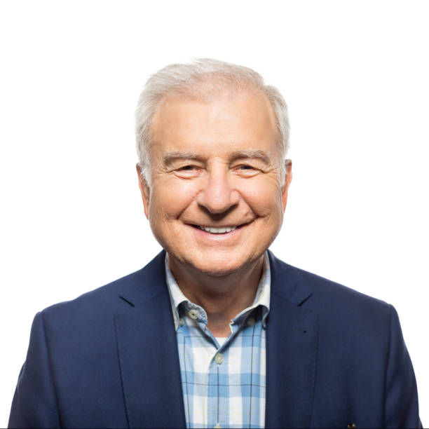
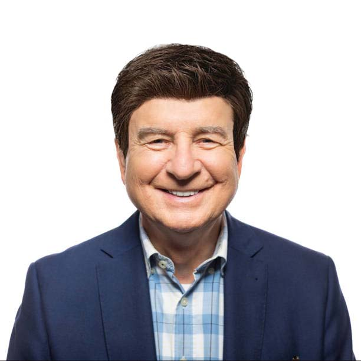

hostware™ began as a small garage-based startup in 2008 by then
Yale sophomore Wesley Gustafson. From 2008 - 2014, Gustafson
polished the antivirus technique and officially launched hostware™
Sept. 1, 2014. Gustafson, who fought a difficult battle with eczema, on
emphasised the importance of honest business practices and affordability
until his unfortunate passing in 2018. (He itched too hard.) Since, hostware™
has rebranded, rereleasing its new and revolutionary hostware™ Shield© in
March 2021.

Robert Oldman, CEO
“I bought it as a joke, but I think hostware™ has transformed into
an incredible investment, truly revolutionary.”
Oldman graduated from Princeton University with a bachelors in entrepreneurship in 1973,
acquiring Oldman Oil shortly after. Oldman shifted his attention to the technology
industry in 2019 when he bought hostware™ and assumed the role of CEO. Oldman has since
brought game changing innovations to hostware™.

Dennis White, Vice President
“hostware™ is better than it’s ever been. Shame about the eczema though.”
Longtime business partner of CEO Robert Oldman, White graduated alongside Oldman
at Princeton and eventually became CEO of Oldman Oil after Oldman retired to acquire
hostware™ in 2019. White currently operates both Oldman Oil and hostware™.

Tom Manning, COO
“hostware™ is the first of its kind. I’ve never seen a business model quite
like ours before.”
Manning has a Master’s in real estate, which he earned in 1981 at Harvard University.
Shifting focus to software in 2017, Manning left real estate behind to join hostware™ in 2020.